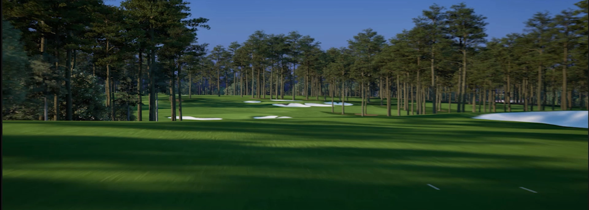

Sync with iPad
Clear default
Hole Insight
Shot video

Playing
Placeholder still. The real clip comes from the Unreal video cache (VideoInsights).
Drag to rotate
Pinch or hold to zoom
Two fingers to pan
Tap a hole to focus
Camera
Frame selection
Filters
Volume
0
50
100
Back
Change tour
The current tour is ticked.
Tour
Restart tour…
Change tour…
Screen
Presenter side
Left
Right
Control height
Screen
UI size
0
50
100
Exit tour…
Tour
Exit tour?
The screen goes back to Idle.
Cancel
Exit
Filters
Clear all